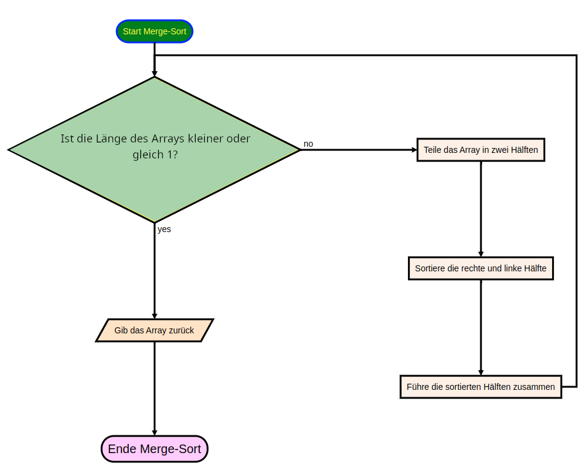
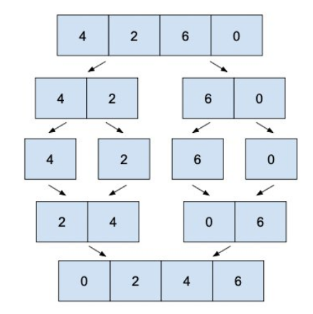

Beschreibung
- unsortierte Liste wird in kleinere Teillisten aufgeteilt, bis jede Teilliste nur noch ein Element enthält
-
Danach: Teillisten paarweise zusammengeführt und dabei in sortierter Reihenfolge kombiniert, bis die gesamte Liste sortiert ist
- Zusammenführung von bereits sortierten Teillisten in eine größere sortierte Liste
Anwendungsbereiche
- besonders nützlich für große Datensätze
- Datenbank- und Betriebssystemimplementierung
- Suchalgorithmen
Pseudocode
- Teilen: Die unsortierte Liste wird rekursiv in kleinere Teillisten aufgeteilt, bis jede Teilliste nur noch ein Element enthält.
- Sortieren: Nachdem die Teillisten auf das kleinste Element reduziert wurden, werden sie paarweise zusammengeführt und dabei in sortierter Reihenfolge kombiniert. Dieser Schritt wird so lange wiederholt, bis die gesamte Liste sortiert ist.
- Zusammmenführen (Merge): Die Schlüsseloperation beim Mergesort ist das Zusammenführen der sortierten Teillisten in eine größere sortierte Liste. Dabei werden die Elemente der Teillisten verglichen und in die endgültige sortierte Reihenfolge gebracht.
Code-Verlauf

Stabilität
Mergesort ist ein stabiler Alogirthmus, d.h. die Reihenfolge der Elemente bleibt erhalten, wenn sie gleich sind.
Zeitkomplexität
Die Zeitkomplexität beträgt im worst (O), average (Θ) sowie best(Ω) case n*log(n).
Beispiele
- worst case: [10, 9, 8, 7, 6, 5, 4, 3, 2, 1]
- best case: [1, 2, 3, 4, 5, 6, 7, 8, 9, 10]
Code
def merge_sort(arr):
# Überprüfe, ob das Array nur ein Element oder leer ist
if len(arr) <= 1:
return arr
# Teile das Array in zwei Hälften
middle = len(arr) // 2
left = arr[:middle] # linke Hälfte
right = arr[middle:] # rechte Hälfte
# Rekursiver Aufruf von merge_sort für die beiden Hälften
left = merge_sort(left)
right = merge_sort(right)
# Führe die beiden sortierten Hälften zusammen
return merge(left, right)
def merge(left, right):
result = [] # Ergebnisliste
left_index = right_index = 0 # Indizes für die linke und rechte Hälfte
# Vergleiche die Elemente der linken und rechten Hälfte und füge das kleinere Element zum Ergebnis hinzu
while left_index < len(left) and right_index < len(right):
if left[left_index] < right[right_index]:
result.append(left[left_index])
left_index += 1
else:
result.append(right[right_index])
right_index += 1
# Füge die verbleibenden Elemente der linken und rechten Hälfte zum Ergebnis hinzu
result.extend(left[left_index:])
result.extend(right[right_index:])
return result
if __name__ == "__main__":
# Führe den Merge Sort Algorithmus aus und gib das sortierte Array aus
print(merge_sort([3, 1, 4, 1, 5, 9, 2, 6, 5, 3, 5]))
Übungsaufgabe
Sortiere die Liste [4, 2, 6, 0]
Lösung
